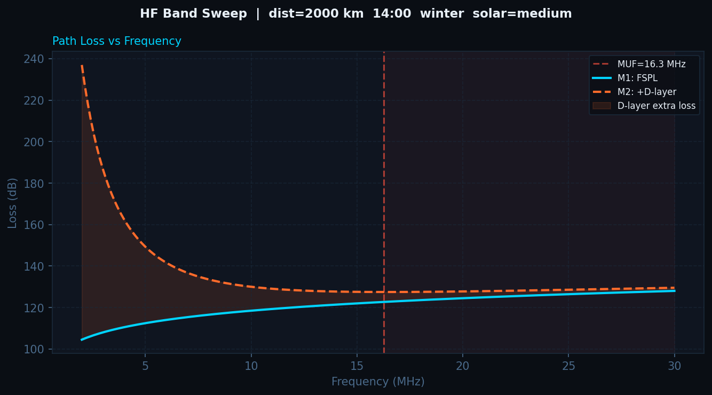

While working at L3H, I took interest in HF propagation losses. Assumptions for Friis' transmission equation are that there are no obstructions and the wave travels with line-of-sight (LOS).
HF uses skywave or groundwave propagation depending on the frequency, both of these are beyond-line-of-sight (BLOS). Friis' free space path loss equation would yield high inaccuracy.
Based on the question of how Ionospheric losses could contribute to HF path loss, I decided to look into how different HF path loss would be.
